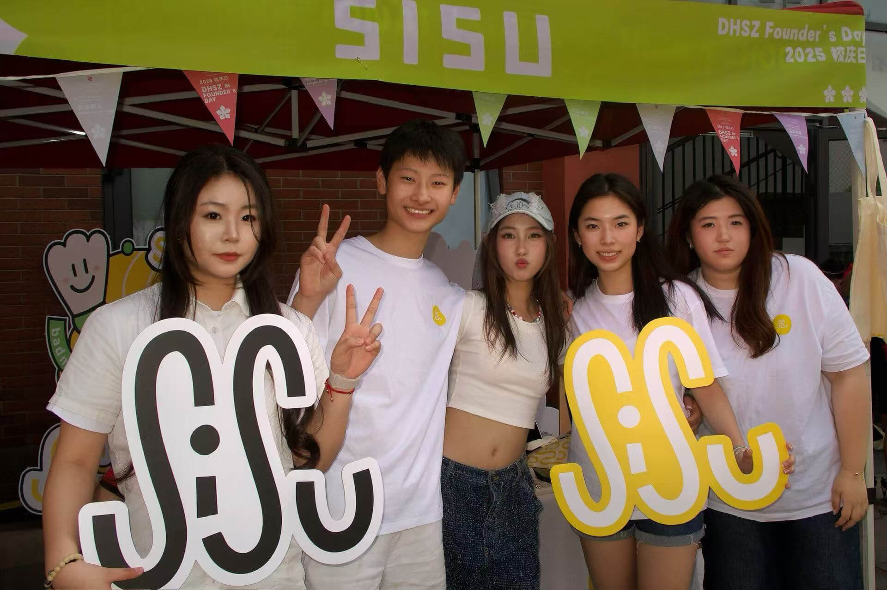

Dulwich Founder's Day 2025
In 2025, SISU proudly joined Dulwich Founder's Day, our very first offline event. To bring our energy to life, we hosted a fun badminton challenge, where students, parents, and teachers all got to experience the SISU spirit firsthand.
At the event, we launched our limited-edition SISU pins and canvas bags, which were warmly received by the community. Our booth quickly became a lively hub, drawing attention not only from students and parents but also from Suzhou Broadcasting Television, who interviewed us on-site.
What made the day even more meaningful was our commitment to giving back. We donated 20% of all event proceeds to the school's charity account, supporting community and public welfare projects.
